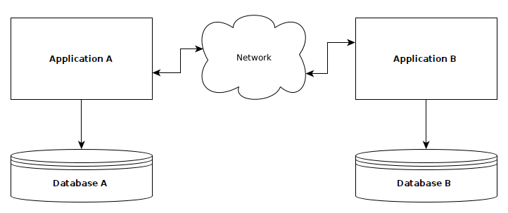
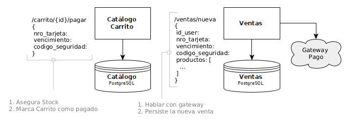
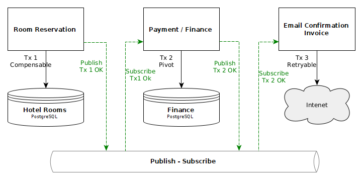
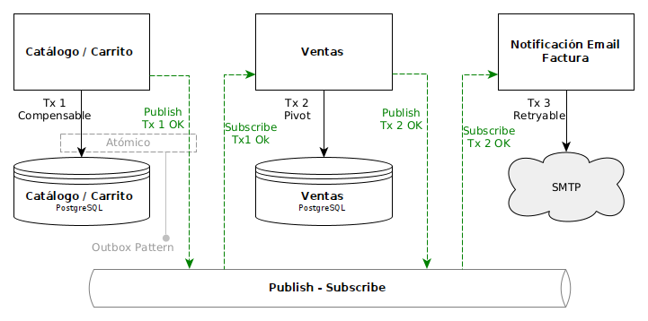
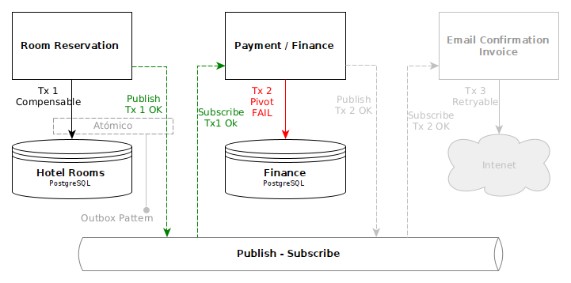
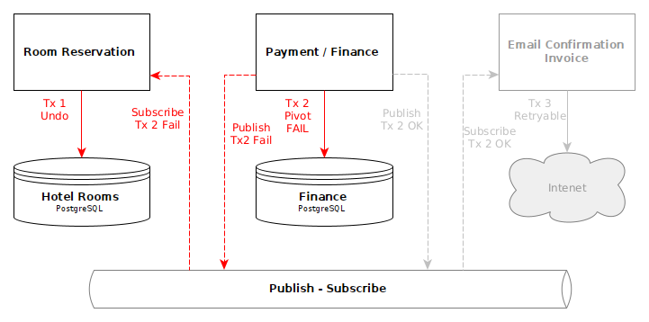

Arquitecturas Distribuídas
En las arquitecturas distribuidas el sistema es particionado en aplicaciones simples donde cada una se deploya en su propio contenedor, el cual corre en su propio proceso y se comunican entre ellas enviándose mensajes a través de la red.
Arquitecturas Distribuídas

Arquitecturas Distribuídas
Pero... como toda decisión de diseño, tiene cosas buenas y también tiene complicaciones.
Complicación 1: Fallas Parciales.
Complicación 2: Adios a las Transacciones tal como las conocemos de las BDs relacionales.
Arquitecturas Distribuídas
Fallas Parciales
"Cuando ejecutamos una aplicación en una única máquina su comportamiento es predecible. Si el hardware donde corre funciona, la aplicación ante las mismas entradas producirá siempre las mismas salidas. Si el hardware donde corre fallara por algún motivo, la aplicación completa dejaría de funcionar (Falla Total). Es decir, una aplicación en una única máquina funciona o no funciona, pero no existe nada en el medio".
Arquitecturas Distribuídas
Fallas Parciales
"Las aplicaciones distribuidas se conforman de varios elementos que podrían fallar. La red, junto a toda su complejidad, más las máquinas donde corra la aplicación son parte del mismo sistema. Cualquiera de alguno de estos elementos (equipos, dispositivos de red como routers, switches, etc) que forman parte de un sistema distribuido podría fallar mientras que el resto de los elementos podrían seguir funcionando. Esto se conoce como falla parcial".
Designing Data-Intensive Applications (Martin Kleppmann)
Inconvenientes frecuentemente ignorados: Falacias de los sistemas distribuidos.
Arquitecturas Distribuídas: Fallas Parciales
No solo fallan las aplicaciones: también fallan los componentes de red (routers, switches, cables, placas de red...).
Arquitecturas Distribuídas: Fallas Parciales
Una parte del sistema falla y el resto sigue funcionando... y Ventas no puede saber si Pagos se cayó, está lento o se perdió el mensaje.
Arquitecturas Distribuídas: La red no es confiable!
A no sabe si el mensaje llegó, si B lo procesó o si se perdió la respuesta.
Arquitecturas Distribuídas: La red no es confiable!
Desde A, una respuesta lenta y una respuesta perdida se ven igual.
Arquitecturas Distribuídas: Pago Online.
Arquitecturas Distribuídas: Pago Online.
El pago efectivamente se realizó.
Pero Ventas no lo sabe, ya que hubo error de timeout.
La unica opción es volver a intentar el pago.
¿Cómo se hace sin duplicar el pago?
Acordando entre los servicios un identificador único para cada pago.
Arquitecturas Distribuídas: Pago Online.
id_carrito es la idempotency key: reintentar es seguro, el pago no se duplica.
Arquitecturas Distribuídas: La red no es confiable!
Entonces... ¿Cómo lideamos con fallas parciales?
Siempre usar Timeouts
Hacer las operaciones Idempotentes: su ejecución producirá el mismo efecto o resultado si se ejecutara una vez o varias veces.
Cada operacion se identifica con un único identificador, de modo que quien recibe puede verificar si dicha operación ya fue procesada o no.
Arquitecturas Distribuídas: Paypal y Mercado Pago
Ver la documentación del gateway de pagos que contratemos.
Paypal sobre fallas parciales.
Mercado Pago sobre fallas parciales.
Transacciones en Arquitecturas Distribuídas
ACID: Isolation para concurrencia, ahora vamos a hablar sobre Atomicidad y Consistencia
En sistemas centralizados, las Tx ACID permiten realizar una serie de operaciones donde si alguna en el medio falla, todo es rollbackeado por la BD. Garantizando Atomicidad y Consistencia.
¿Qué sucede en sistemas heterogéneos?
¿Qué sucede en arquitecturas distribuidas?
O sea, cuando necesito atomicidad pero el trabajo a realizar esta localidado en dos o más procesos que no son transaccionalmente compatibles.
Transacciones en Arquitecturas Distribuídas
Caso 1: Cambios en BD y en File System
Necesito insertar un registro y además guardar en file system un PDF.
Simple de resolver, que les parece esto?
public void guardar(String fileName, String fileEnBase64) {
//...
try {
String filePath = PATH + fileName;
em.beginTransaction();
em.persist(new MyFile(fileName, filePath));
em.commit();
fileSystem.guardar(filePath, fileEnBase64);
} catch(Exception e) { em.rollback(); throw e;}
//...
}
siempre es posible hacerlo mal...
Transacciones en Arquitecturas Distribuídas
Caso 1: Cambios en BD y en File System
¿Ahora mejor?
public void guardar(String fileName, String fileEnBase64) {
//...
try {
em.beginTransaction();
String filePath = PATH + fileName;
em.persist(new MyFile(fileName, filePath));
fileSystem.guardar(filePath, fileEnBase64);
em.commit();
} catch(Exception e) { em.rollback(); throw e;}
//...
}
Solo si fileSytem.guardar(...) lanza una exception en caso de error...
Transacciones en Arquitecturas Distribuídas
Caso 1: Cambios en BD y en File System
Si no lanza exception...
public void guardar(String fileName, String fileEnBase64) {
//...
try {
String filePath = PATH + fileName;
em.beginTransaction();
em.persist(new MyFile(fileName, filePath));
if (fileSystem.guardar(filePath, fileEnBase64))
em.commit();
else
em.rollback();
} catch(Exception e) { em.rollback(); throw e;}
//...
}
¿Esto siempre genera atomicidad/consistencia? puede quedar el archivo huérfano...
Transacciones en Arquitecturas Distribuídas
Caso 1: Cambios en BD y en File System
mas fácil...
public void guardar(String fileName, String fileEnBase64) {
//...
String filePath = PATH + fileName;
if (!fileSystem.guardar(filePath, fileEnBase64))
throw new Exception("No se pudo guardar el archivo");
try {
em.beginTransaction();
em.persist(new MyFile(fileName, filePath));
em.commit();
} catch(Exception e) { em.rollback(); throw e;}
}
¿Esto siempre genera atomicidad/consistencia? puede quedar el archivo huérfano...
Transacciones en Arquitecturas Distribuídas
Caso 1: Cambios en BD y en File System
Podrian quedar archivos guardados sin su relacion con la BD...
Podríamos tener un proceso que limpie archivos sin su relacion con la BD.
Nuevo concepto: Compensate transaction.
Compensar: para dejar el sistema consistente.
Transacciones en Arquitecturas Distribuídas
Caso 1: Cambios en BD y en File System
Esta inconsistencia no molesta, a lo sumo solo quedan en disco algunos archivos huérfanos.
En la aplicación siempre listamos a partir de lo almacenado en la BD, con lo cual nunca encontraríamos una referencia rota.
Transacciones en Arquitecturas Distribuídas
Caso 2: ¿En el trabajo grupal, en que caso necesitamos atomicidad entre componentes que no son transaccionalmente compatibles?
Y aca no podemos darnos el gusto de que haya inconsistencia
Insert/Update en BD (Insertar una nueva Película) y push de mensaje en RabbitMQ (Evento de NuevaPelicula).
La BD y RabbitMQ no son transaccionalmente compatibles.
Transacciones en Arquitecturas Distribuídas
Caso 2: BD y RabbitMQ
Problema: Necesitamos tener atomicidad/consistencia entre dos servicios que no son transaccionalmente compatibles.
Solución:
Hablar solo con uno y que ese seleccionado hable con el otro.
Arquitecturas Distribuídas: Transacciones
Caso 2: BD y RabbitMQ
Si elijo RabbitMQ: No inserto en BD. Publico un mensaje y creo N consumers (la BD es uno).
Si elijo la BD: aprovecho la Tx de persistir en BD para dejar un "job" en un tabla "queue".
Luego habrá otro proceso (cron job) que lea esa tabla y publique el evento en RabbitMQ.
Arquitecturas Distribuídas: Transacciones
Outbox Pattern
public void nuevaPelicula(Long id, String nombre) {
//...
try {
em.beginTransaction();
em.persist(new Pelicula(id, nombre));
em.persist(new Job(JobType.NUEVA_PELI,
new Payload(id, nombre)));
em.commit();
} catch(Exception e) { em.rollback(); throw e;}
//...
}
Arquitecturas Distribuídas: Transacciones
Outbox Pattern: Aprovecho la Tx local de persistir la venta para dejar un job en un tabla "queue".
Eventual Consistency vs Strong Consistency
Nuevo Concepto:Retry Transaction.
Sigue y sigue hasta que logro publicar el evento en RabbitMQ.
Transacciones en Arquitecturas Distribuídas
Transacciones Distribuídas en Microservicios
Supongamos los siguientes verticales en una arquitectura de microservices:

Arquitecturas Distribuídas
SAGAS
Paper de Hector Garcaa-Molrna & Kenneth Salem de 1987.
Paper SagasArquitecturas Distribuídas
SAGAS (Choreographed)

Arquitecturas Distribuídas
SAGAS (Choreographed)

Arquitecturas Distribuídas
SAGAS (Choreographed)

Arquitecturas Distribuídas
SAGAS (Choreographed)

Arquitecturas Distribuídas
SAGAS (Choreographed)
Super complejo... intentar evitarlo.
Hasta Amazon lo dice: AWS Sagas
Microservicios
¿Cuán chico (small) deben ser los servicios?
Dos criterios para enteder si dividimos o juntamos:
Transacciones: Si tenemos entidades que necesitan trabajar juntas de forma atómica, entonces deben estar en el mismo microservicio. Las transacciones distribuidas son complicadas, si es posible evitarlas, mejor. Sarah Wells: You really want to keep data that changes together in the same place, owned by the same team, to avoid distributed transactions.
Comunicación: Si algunos microservicios requieren demasiada comunicación entre ellos para ofrecer sus servicios quizás es mejor unificarlos en un único microservicio más grande.
Transacciones Distribuídas
Mucho mas para estudiar... ademas de SAGAS.
Two-Phase Commit: soportado originalmente por las DBMS relacionales: MySql y Pg.
TCC: Try, Commit, Cancel by Pat Helland (2007).
Frameworks que ayudan: DTM, Spring-Boot: Atomikos o Bitronix
Sagas vs Atomikos. XA Transactions.
Opciones para TFCs